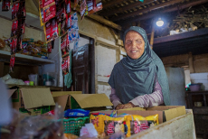

Keputusan berani inilah yang mendorong Taufik untuk menelusuri bentuk usaha yang dapat mewujudkan mimpinya. Melihat sekelompok ibu berbudidaya jamur tiram saat bertandang ke rumah kawan, Opik, demikian panggilan akrabnya, langsung berminat mengikuti jejak mereka. Ia pun banyak belajar dari kakak kelasnya semasa kuliah yang telah lebih dulu menekuni bidang ini.
Tanpa perlu lahan luas, dan memberikan hasil yang lumayan, budidaya jamur tiram segera memikat perhatian Opik. Akan tetapi perjalanan usahanya tak serta merta berjalan mulus. Pengalaman pertamanya justru pahit karena ia tertipu oleh penjual bibit jamur. Warga Pangalengan, Kabupaten Bandung ini tak menyerah, ia bangkit dan ahirnya siap menyambut panen pertamanya di awal 2015. Namun, cobaan kembali mendera. Kali ini ujian datang dari alam. Hujan deras yang mengguyur kala itu tidak hanya merendam lahan jamur tiramnya, bahkan ikut merobohkan bangunan kumbungnya. Opik tak bergeming. Ia bangun kembali usahanya, meniti jalan untuk bangkit. Ia percaya kesuksesan yang langgeng didapatkan dari belajar banyak melalui kegagalan.

Perlahan, kerja keras Opik mulai membuahkan hasil. Kekuatan tekadnya menggerakkan Star Energy Geothermal Wayang Windu (SEGWWL) untuk mendukung usahanya, mulai dari pembinaan, penyediaan bangunan untuk produksi, penambahan petani binaan untuk dapat memperkuat kapasitas produksi, hingga bantuan alat-alat untuk pembuatan pelet dan briket bahan bakar sebagai hasil pengolahan limbah media tanam jamur tiram. Melalui perpaduan keuletan, kemauan untuk terus belajar dan dukungan dari SEGWWL, Opik akhirnya mampu melahirkan usaha budidaya jamur bernama Villa Mushroom Agrifarm (VMA).
Para petani yang semula hanya paham menanam dan memanen biji kopi, perlahan mulai memahami begitu banyak teknik, mulai dari teknik pemetikan, pengeringan dan penyimpanan. Bahkan, petani diajak memikirkan regenerasi pohon-pohon kopi sehingga kelak di kemudian hari mereka tidak kehilangan sumber penghasilan karena menuanya pohon-pohon kopi yang mereka panen sekarang.

Melalui organisasi Pecinta Alam Penelusur Belantara (PAPB) Tiara, Rega bersama rekan-rekan aktif menyuarakan kepedulian terhadap isu lingkungan khususnya di wilayah Pangalengan. Tak sekedar menyuarakan kepeduliannya,Rega juga aktif menggagas berbagai kegiatan yang bertujuan menjaga alam sekitar dari kerusakan lingkungan. Begitupun halnya dengan Star Energy Geothermal Wayang Windu Limited (SEGWWL) yang beroperasi di wilayah Kecamatan Pangalengan dan melihat beberapa permasalahan lingkungan yang perlu mendapat perhatian, yaitu kesulitan air bersih saat musim kemarau, ancaman longsor dan kebakaran hutan akibat alih fungsi lahan di lereng gunung dengan kemiringan lebih dari 35 derajat.
Kesamaan visi dan kepedulian inilah yang lantas melahirkan kolaborasi antara SEGWWL dengan PAPB Tapak Tiara untuk menggagas program lingkungan bertajuk Cinta Bakti Lestari sejak 2017. Kolaborasi ini menjadi motivasi yang kuat bagi Rega dan rekan-rekannya bahwa kepeduliannya terhadap permasalahan lingkungan mendapat sambutan dan dukungan.

Sejak itu Rega dan rekan-rekannya semakin aktif berupaya melakukan sosialisasi kepada masyarakat tentang pentingnya menjaga kelestarian lingkungan. Memang tidak seluruh upaya yang ia lakukan berjalan mulus. Menghadapi penolakan, ia terus maju dengan mencoba pendekatan yang berbeda. “Saya merasa beruntung kelompok Tapak Tiara ini memiliki anggota dengan beragam profesi dan keterampilan. Dengan begitu, kami bisa menjajaki beragam pendekatan kepada masyarakat saat kami mendapat tantangan,” ujarnya.
Kini, para anggota Tapak Tiara dan masyarakat telah merasakan manfaat program ini. Walau jalan masih terbentang panjang untuk mewujudkan cita-cita akhir program ini, namun perubahan sikap pada beberapa kelompok masyarakat yang selalu mengedepankan kelestarian lingkungan menjadi capaian yang patut dibanggakan. Hal ini terlihat dari kunjungan Dinas Lingkungan Hidup Kabupaten Bandung ke Leuweung Citere beberapa kali guna memberikan dukungannya kepada program ini. Program ini juga berkontribusi mengantarkan SEGWWL meraih penghargaan PROPER Emas 2018 dari Kementerian Lingkungan Hidup dan Kehutanan Republik Indonesia. Semoga kepedulian dan komitmen menjaga kelestarian lingkungan ini semakin meluas di masyarakat di masa mendatang.

Diawali dari keinginannya untuk meninggalkan kehidupan jalanan, Iwan memutuskan untuk bergabung pada program peternakan ayam yang digagas oleh Star Energy Geothermal Salak, Ltd. (SEGS) bekerja sama dengan Yayasan Jaya Laras Sembada. Usaha peternakan ayam bersama kelompoknya dimulai dari memelihara 500 ekor ayam. Pak Iwan menerapkan metode peternakan yang ia namakan “longay” atau Kolong Ayam.
Kandang ia dirikan di atas empang ikan lele, sehingga kotoran ayam bisa langsung menjadi makanan ikan lele tanpa sempat menimbulkan bau tidak sedap di lingkungannya. Dari usaha peternakan lelenya, Pak Iwan juga mendapatkan hasil yang cukup memberi harapan. Sebagai contoh saat panen terakhir, Pak Iwan dan kelompoknya menghasilkan 600 kg ikan lele.

Dimulai di tahun 2017, program ini ditujukan bagi masyarakat di wilayah Halimun dan Salak yang terkenal memiliki potensi lokal melimpah mulai dari air yang segar dan tanah yang subur khas pegunungan. Hal ini terbukti dengan banyaknya investor dari luar wilayah yang mendirikan perkebunan sayur mayur yang subur hingga kawasan peternakan ayam. Sayangnya, segala potensi yang ada ini belum dimanfaatkan sepenuhnya oleh masyarakat. Keinginan berwirausaha belum terpupuk, karena tidak ada rasa percaya diri. Akibatnya, ketergantungan mereka pada perusahaan dan pemerintah pun menjadi sangat tinggi.
Peternakan ayam petelur digagas untuk menciptakan sebuah kawasan produksi telur sehingga akan memudahkan masyarakat setempat membeli telur dengan harga terjangkau dengan kualitas baik, yang selama ini hanya bisa diperoleh dari kota dengan jarak yang jauh. Tentu, telur berkualitas yang dihasilkan dari program inipun diharapkan memiliki nilai jual yang tinggi sehingga tidak saja mensejahterakan masyarakat, namun juga membangun kepercayaan diri mereka untuk bisa mandiri. Sejak tahap perencanaan, perangkat desa, karang taruna dan LSM setempat dilibatkan dalam menentukan sasaran untuk menumbuhkan rasa memiliki terhadap program ini. Tidak ada persyaratan rumit untuk bergabung. Program ini terbuka bagi siapa saja yang mau belajar, bekerja keras dan ingin berwirausaha. Belajar berwirausaha tentu bukanlah hal yang mudah karena perlu adanya perubahan pola pikir. Karenanya, peran Iwan Suryana menjadi sangat penting, bukan saja untuk berbagi ilmu dan pengalaman, tetapi meyakinkan kepada para calon penerima manfaat program bahwa kesejahteraan bisa terwujud bila ada kemauan yang didorong oleh kerja keras.

Misi Iwan untuk meyakinkan penduduk inipun bukan tanpa halangan. Setelah dua tahun ia dan kelompoknya menjalankan usahanya, masyarakat pun mulai mau bergabung dalam program ini. Memasuki tahun ketiga pelaksanaannya, program ini terus menunjukkan perkembangan positif. Jumlah peternak penerima manfaat yang semula hanya 4 orang di mana terdapat 65 orang penerima manfaat dengan 1.000 ekor ayam kini tumbuh menjadi 30 peternak dengan 127 orang penerima manfaat dan 5.345 ekor ayam petelur.

Walau kegelapan telah menjadi teman hidupnya, saat ini rumahnya telah diterangi dengan bola lampu listrik sejak program Desa Ca’ang bergulir didesanya. Ia bahagia karena listrik menerangi desanya waktu belajar mengaji anak-anak muridnya bisa lebih panjang. Apa yang dirasakan Mak Otoh, hanyalah salah satu dari begitu banyak manfaat yang dirasakan oleh 500 kepala keluarga di Kecamatan Sukaresmi dan Pasir Wangi, Kabupaten Garut, Jawa Barat. Sejak 2016 Star Energy Geothermal Darajat II Ltd (SEGD II) menggagas program Desa Ca’ang (bahasa Sunda: Desa yang Terang) sebagai bentuk kepedulian perusahaan atas kondisi beberapa desa di sekitar wilayah operasionalnya yang masih pra-sejahtera dan belum teraliri listrik.
Program ini lantas dikembangkan menjangkau ke ranah pendidikan mengingat masih tingginya angka buta huruf di wilayah tersebut. Melalui kegiatan bertajuk MASAGI (Maca sakali ngarti, atau membaca langsung mengerti) para siswa sekolah maupun ibu rumah tangga didorong untuk meningkatkan keterampilan baca tulis melalui pendekatan berbasis budaya lokal. Tidak berhenti di situ, Program Desa Ca’ang pun turut menyentuh aspek pelestarian lingkungan yang di kemudian hari disinergikan untuk membangun kesejahteraan desa di dua kecamatan ini. Beragam upaya dilakukan untuk menumbuhkan kesadaran masyarakat tentang resiko yang akan timbul di masa depan apabila alih fungsi lahan hutan menjadi ladang sayur mayur dibiarkan tanpa pengelolaan yang berkelanjutan. Oleh karenanya pemahaman masyarakat tentang pelestarian lingkungan dan pemanfaatan hutan yang memiliki dampak positif secara ekologis musti terus ditumbuhkan.
Listrik yang mengalir diharapkan turut mendorong kegiatan ekonomi di desa demi mengakselerasi kesejahteraan masyarakat. Untuk memastikan listrik tetap menyala, masyarakat juga menyepakati adanya iuran dengan biaya terjangkau. Dari sinilah, lahir gagasan untuk membentuk unit-unit usaha yang dikelola oleh masyarakat. Sebanyak 51 unit usaha telah terbentuk, dan keuntungan yang diperoleh, digunakan untuk membiayai kelistrikan di masing-masing rumah para anggota kelompok. Salah satu bentuk usaha diberi nama Bumi Runtah Token (BURUKEN). Di sini, masyarakat mengolah sampah baik organik maupun anorganik menjadi barang-barang bernilai komersil dan hasil penjualan barang-barang inilah yang kemudian digunakan untuk membeli token listrik.
Hingga kini tujuan utama program ini hampir tercapai. Sebanyak 500 kepala keluarga telah menikmati aliran listrik. Empat pilar program ini, yaitu ca’ang listrikna (terang listriknya), ca’ang pesakna (terang penghidupannya –atau ekonominya), ca’ang otakna (berilmu) dan ca’ang alamna (terang alamnya), telah melebur menjadi sebuah cahaya yang menerangi masa kini penduduk dengan melahirkan banyak perubahan positif. Tak kalah menariknya, inklusivitas juga menjadi aspek penting yang ditanamkan pada program ini. Pasalnya program ini mensyaratkan bahwa dari delapan orang penerima manfaat program paling tidak ada satu orang difabel. Sekali lagi, program ini menunjukkan manfaatnya dalam menyejahterakan masyarakat, termasuk orang-orang seperti Mak Otoh.